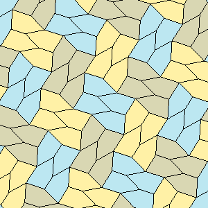
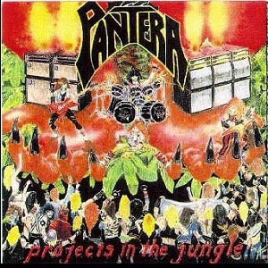
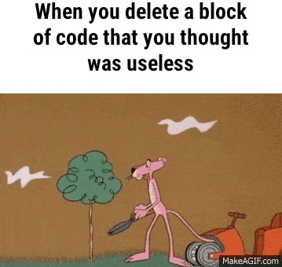

A lesson learned in life
Known from the dawn of time
Premature optimization is the root of all evil
Ariadne 5 ¿Qué puede salir mal?
Ariadne 5, un cohete diseñado por la agencia espacial europea, su primer lanzamiento el 4 de Junio de 1996, tardó 37 segundos..en explotar.
Mientras hacía cálculos para apuntar el propelente del cohete, convirtió float de 64-bit a int de 16-bit signed, causó overflow.
No chequeó la conversión, y la unidad de respaldo, idéntica, falló con el mismo error.
Datos basura entraron como válidos, desvió la boquilla girando el cohete en extremo, se expuso a fuerzas fuera de diseño.
A la belleza incremental..just say NO
- Primero el latido, los detalles después
(mejor aún, nunca)
- Causa y Efecto: cosas de historiadores, fábulas.
- Conexión proceso-resultado suele ser incomprensible.
La belleza de una obra no necesita estar en el proceso de construcción.
A la belleza incremental..just say NO
"Así como π no puede sospecharse entre los infinitos términos de una serie que la calcule, menos aún aparecer literalmente entre ellos. Una gran obra nunca figura ni se deduce de los términos de su secuencia de construcción"
"La belleza de una persona no se encuentra entre los pliegues de los genitales peludos de sus progenitores, aunque hubieran sido necesarios durante el proceso de reproducción."
La pureza, independencia, desacople
Son fantasías
La Inter-dependencia en Teoría

La Inter-dependencia en la Práctica

Projects in the Jungle
Tipos de Datos
- Le dan sentido al compilador (sino usar javascript o hacer diseño gráfico)
- En C facilitan más al compilador, para encajar con el micro, que al programador
- Tipos primitivos: evitar
Tipos primitivos, casos necesarios
- Datos cercanos a hard: bytes, words. Usar <stdint.h>
- Para declarar tipos compuestos (typedef struct) disfraza a C de "fuertemente" tipado
typedef struct {
uint32_t contador;
uint8_t flags;
}DatoCompuesto_t;
No está de más repetir, siempre usar <stdint.h>
const
const siempre y en todos los argumentos, hasta que No compile nada. Partir de ahí.
Sleeps, retardos
No usar.
if
No usar, salvo necesidad extrema.
Cuestionar a cada if ¿qué hace ahí? ¿Por qué necesita el programa preguntar eso?
Menos ifs, menos combinaciones, menos sorpresas y errores.
if
Menos chequear una y otra vez en variables lo que el código ya sabe,
o debería saber.
La función del programa debe estar embebida en su naturaleza, si no sabe lo que hace, no lo compensará preguntando con ifs y variables
«If you have to ask what jazz is, you'll never know.» Louis Armstrong
if
El contexto de la función, el tipo de dato de sus argumentos, la posición de ejecución.. el diseño del programa debe representar información que ahorre preguntas.
«Quod natura non dat, Salmantica non præstat»
Tipos Bit/Boolean
False. No usar.
Una macros útiles para bits:
#define SETBIT(var, nbit) ((var)|=(1UL<<(nbit)))
#define CLRBIT(var, nbit) ((var)&=(~(1UL<<(nbit))))
#define BITAT(var, nbit) ((var)&(1<< (nbit)))
Para chequear "booleans"
if ( x!=0 ), mejor que if ( x==1 )
Pero mejor aún constantes con nombres, enums, etc..
Obviamente NO a los magic numbers.
if ( musica != PANTERA ) {
break;
}
código claro
int es enemigo, un mal innecesario
aceptarlo, conocerlo, es tipo default en constantes, esa basura convivirá con C hasta que se extinga en el infierno.
Periféricos, y DMA are friends
Todo lo que se pueda hacer por Hardware mejor (hard EXTERNO, aún mejor)
RTOS vs not RTOS
La elección de la pastilla de matrix.
Linux
Pastilla azul de matrix.
IRQ's are friends
Darle a la ISR tareas livianas, buffers, banderitas, pero nunca hard, ni write IO.
Hard IO
Máquinas de estados. No excuses.
functions are best friends
- Las funciones son para separar y componer, no para ocultar.
- Los nombres de las funciones son pistas de su función o inutilidad.
- Aprender a programar es sobretodo crear, nombrar y renombrar funciones.
Callbacks are risky friends
No usar, excepto en caso necesario.
Reserva dinámica de memoria
No.
Arrays, peligrosos
Evitar, y si acaso, encapsular acceso donde sea posible.
Strings en C: peligrosos (son arrays)
Mínimo: reemplazar todo uso de strlen por strnlen
Estados
NO. Ni globales, ni "static".
Ok, se admiten algunos buffers y banderitas para que la amiga ISR nos informe.
inline functions
no confiar en el compilador.
volatile
no confiar en el compilador.
volatile, ok, pero no evita accesos no-atómicos,
no es para eso.
Solución : ninguna, salvo horrible disable IRQ, CRITICAL_SECTION's
minimizar lo compartido con ISR
Varios
- Usar git
- Manejo dependencias: elegir uno fácil de migrar.
- Manejo compilación: elegir uno fácil de migrar.
- Frameworks, no usar: ninguno es fácil de migrar.
- Datos: JSON (world peace of data format), si se necesita DB, usar clásicas, viejas. Contratar a alguien.
Si no se entiende, REFACTOR
A toda escala, excepto si es algo nuevo o en urgencias.
CERO código es mejor que cualquier código
(casi siempre)
Las consecuencias de los cambios no son fácilmente previsibles.

Futuro
- No. No diseñar estructuras para futuro.
- Ni una sola línea, ¿usted adivina el futuro?
vaya al casino.
Hello? Anybody home? Think, McFly! Think!
Es más probable reutilizar la cabeza que el código.
"Por las dudas?"<-- NADA
¿Qué dudas?
Are you talking to me?
...walk on home boy